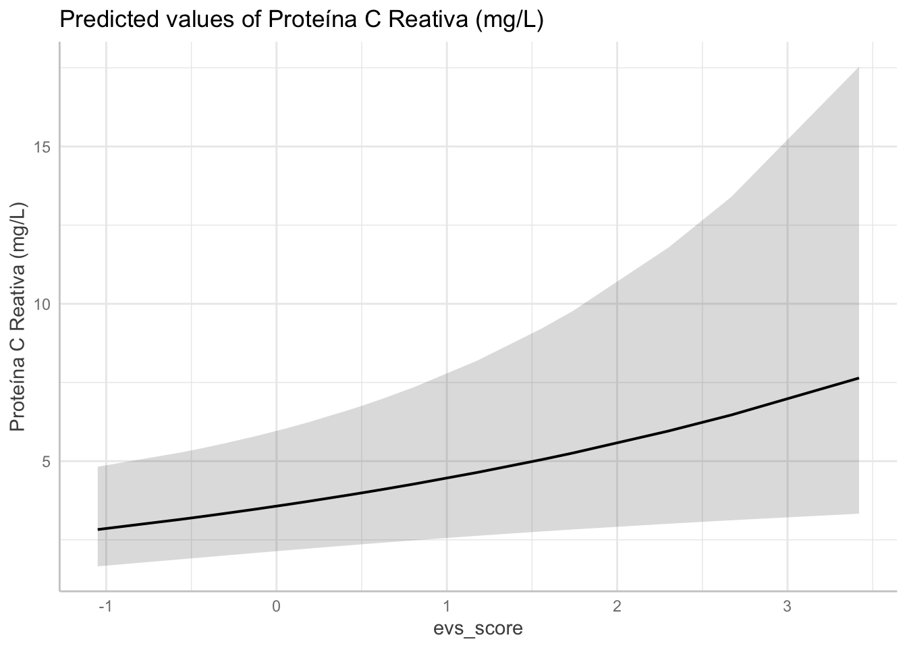

here() starts at /Users/gustavosplmoura/Library/Mobile Documents/com~apple~CloudDocs/Medicina/Biblioteca/Data Science/Data Science/R_Projects_Research/DVEP
library(lme4)
Loading required package: Matrix
Attaching package: 'Matrix'
The following objects are masked from 'package:tidyr':
expand, pack, unpack
library(lmerTest)
Attaching package: 'lmerTest'
The following object is masked from 'package:lme4':
lmer
The following object is masked from 'package:stats':
step
library(skimr)library(performance)# Read Files ----## Codebookscodebook_dvep <-read_excel("Codebooks/codebook_dvep.xlsx",col_names =TRUE,col_types =NULL,na =c("", "NA", "NI", "UNK", "NASK", "ASKU", "INV"),trim_ws =TRUE,skip =0, # Number of lines to skip before reading datan_max =Inf, # Maximum number of lines to read.guess_max =1000) %>%arrange(index)codebook_structure <-read_csv("Codebooks/codebook_structure.csv",col_names =TRUE)
Rows: 34 Columns: 9
── Column specification ────────────────────────────────────────────────────────
Delimiter: ","
chr (2): form_name_en, form_name_pt
dbl (7): repeating, eleg, V1, V2, V3, order, variable_count
ℹ Use `spec()` to retrieve the full column specification for this data.
ℹ Specify the column types or set `show_col_types = FALSE` to quiet this message.
Rows: 330 Columns: 4
── Column specification ────────────────────────────────────────────────────────
Delimiter: ","
chr (2): ncit_code, descriptive
dbl (2): type, medicamentos_comorbidades_complete
ℹ Use `spec()` to retrieve the full column specification for this data.
ℹ Specify the column types or set `show_col_types = FALSE` to quiet this message.
codebook_bia <-read_excel("Codebooks/codebook_bia.xlsx",col_names =TRUE,col_types =NULL,na =c("", "NA", "NI", "UNK", "NASK", "ASKU", "INV"),trim_ws =TRUE,skip =0, # Number of lines to skip before reading datan_max =Inf, # Maximum number of lines to read.guess_max =1000) %>%arrange(index)## Datadata <-readRDS("Data_processed/data.rds")data_bia <-readRDS("Data_processed/data_bia.rds")data_bia_D1 <-readRDS("Data_processed/data_bia_D1.rds")data_bia_D1_mean <-readRDS("Data_processed/data_bia_D1_mean.rds")data_bia_D1_raw <-readRDS("Data_processed/data_bia_D1_raw.rds")data_bia_D3 <-readRDS("Data_processed/data_bia_D3.rds")data_bia_D3_mean <-readRDS("Data_processed/data_bia_D3_mean.rds")data_bia_D3_raw <-readRDS("Data_processed/data_bia_D3_raw.rds")data_bia_mean <-readRDS("Data_processed/data_bia_mean.rds")data_d1_exclusive <-readRDS("Data_processed/data_d1_exclusive.rds")data_filtered <-readRDS("Data_processed/data_filtered.rds")data_filtered_seca <-readRDS("Data_processed/data_filtered_seca.rds")I21_conditions_R <-readRDS("Data_processed/I21_conditions_R.rds")I22_drugs_R <-readRDS("Data_processed/I22_drugs_R.rds")I27_labs_R <-readRDS("Data_processed/I27_labs_R.rds")I29_compliance_new <-readRDS("Data_processed/I29_compliance_new.rds")I30_events_R <-readRDS("Data_processed/I30_events_R.rds")## SUPERTIBBLEdata_instruments <-readRDS("Data_instruments/data_instruments.rds")
Variables of interest
(1 | record_id) + visit + allocation_group + age + sex + race + education +
Correlation matrix not shown by default, as p = 24 > 12.
Use print(x, correlation=TRUE) or
vcov(x) if you need it
A modelagem estatística foi conduzida por meio de um modelo linear misto, com intercepto aleatório por participante (record_id), ajustado pelo método de máxima verossimilhança restrita (REML). O desfecho avaliado foi o ângulo de fase, e todas as variáveis contínuas foram previamente padronizadas (média = 0; desvio padrão = 1), com exceção do índice QUICKI, mantido em sua unidade original para favorecer a interpretabilidade clínica. A variável duration_difference representa o desvio absoluto (em dias) da duração planejada da intervenção (90 dias), sendo ajustada para zero na linha de base e posteriormente padronizada.
O modelo incluiu 24 preditores fixos e apresentou bom ajuste, com critério REML igual a 267,6 [um valor inferior ao do modelo anterior (REML = 275)], indicando melhora na parcimônia e qualidade do ajuste após a redução de variáveis.
Efeitos fixos
Três variáveis demonstraram associação estatisticamente significativa com o desfecho:
Pressão arterial média (mean_bp_mean): apresentou associação positiva com o ângulo de fase (β = 0,19; p = 0,045), sugerindo que níveis mais elevados de pressão arterial podem estar relacionados a melhor integridade funcional da membrana celular.
Dose de álcool (alcohol_dose): foi o preditor com maior significância estatística (β = 0,25; p < 0,001), com associação positiva ao ângulo de fase. Este achado deve ser interpretado com cautela, podendo refletir fatores comportamentais, sociais ou nutricionais não diretamente capturados no modelo.
Proteína C reativa (labs_crp): demonstrou associação positiva marginalmente significativa (β = 0,13; p = 0,032), o que pode sugerir uma relação complexa entre inflamação subclínica e alterações na composição ou integridade celular.
As demais variáveis — incluindo visit, allocation_group, completed_intervention, duration_difference, além de variáveis laboratoriais como labs_ldl, labs_triglycerides e labs_quick_index — não apresentaram associações estatisticamente significativas com o desfecho.
Efeitos aleatórios
A variância associada ao intercepto aleatório por participante foi de 0,72, enquanto a variância residual foi de 0,11. Esse achado demonstra que há considerável variabilidade entre os indivíduos, reforçando a pertinência da inclusão do componente aleatório no modelo. Em outras palavras, parte substancial da variabilidade total no ângulo de fase é explicada por diferenças interindividuais, o que justifica o uso de modelos mistos para melhor estimar os efeitos fixos, controlando tais variações basais.
Considerações metodológicas
Multicolinearidade: Dada a inclusão de 24 preditores em um modelo com 111 observações, recomenda-se avaliar a presença de colinearidade, especialmente entre variáveis clínicas e laboratoriais potencialmente redundantes. Sugere-se a aplicação da função performance::check_collinearity() para investigar VIFs elevados, que podem inflar erros padrão e comprometer a interpretação dos coeficientes.
Redução de preditores: A elevada razão entre o número de preditores e o tamanho da amostra (p > n/4) pode levar a sobreajuste (overfitting) e instabilidade nos coeficientes. Uma abordagem sugerida é a redução guiada por critérios de informação (AIC) ou penalização via regressão LASSO (glmnet), com o objetivo de selecionar subconjuntos mais estáveis de variáveis.
Avaliação da qualidade do ajuste: Recomenda-se utilizar a função performance::check_model() para verificar a normalidade dos resíduos, homocedasticidade e presença de observações influentes. Além disso, a obtenção dos valores de R² marginal e condicional pode auxiliar na compreensão da proporção da variância explicada pelo modelo fixo e pelo modelo completo (incluindo os efeitos aleatórios).
Tratamento da variável visit: Embora visit não tenha apresentado significância estatística no modelo atual, trata-se de uma variável importante, dado o delineamento longitudinal do estudo. Deve-se avaliar se o uso de visit como variável contínua linear é adequado ou se uma estrutura categórica com interação (e.g., visit*allocation_group) ou a inclusão de um termo de inclinação aleatória por visita ((visit | record_id)) poderia capturar melhor as trajetórias individuais ao longo do tempo.
Avaliação da Multicolinearidade
Dada a inclusão de um número elevado de preditores no modelo (n = 24), avaliou-se a presença de multicolinearidade utilizando o Fator de Inflação da Variância (VIF) por meio da função performance::check_collinearity().
Todos os preditores apresentaram VIFs inferiores a 3, indicando ausência de multicolinearidade preocupante. Os valores variaram entre 1,13 e 2,64, o que representa correlações lineares fracas a moderadas entre os preditores, sem risco aparente de distorções nas estimativas dos coeficientes.
Abaixo, apresenta-se a interpretação convencional dos valores de VIF:
O modelo atual inclui 24 preditores fixos, o que, diante de uma amostra com 111 observações, pode comprometer o poder estatístico e a interpretabilidade dos resultados devido ao risco de sobreajuste (overfitting).
A escolha da melhor abordagem para simplificar o modelo depende do objetivo central da análise:
Modelos orientados por desempenho (predição)
Caso o foco seja a performance preditiva, o uso de estratégias orientadas por dados é mais apropriado:
Seleção stepwise (backward) com base em critérios de informação como AIC ou BIC. O AIC favorece modelos com melhor ajuste (ainda que mais complexos), enquanto o BIC impõe maior penalidade à complexidade, favorecendo modelos mais parcimoniosos.
Regressão penalizada via LASSO (glmnet), que tende a selecionar subconjuntos estáveis de variáveis ao impor penalizações sobre os coeficientes, sendo especialmente útil em situações com colinearidade moderada e alta dimensionalidade de preditores.
Modelos orientados por inferência e explicação
Quando o objetivo principal é a interpretação causal ou explicativa, como em estudos clínicos e intervenções, a estratégia mais robusta é a redução teórica guiada por plausibilidade clínica. Essa abordagem inclui:
Remoção de variáveis com baixa significância estatística e sem fundamento teórico forte;
Exclusão de variáveis redundantes ou fortemente correlacionadas (ex.: manter labs_quick_index e excluir glicemia/insulina);
Atenção a comportamentos instáveis dos coeficientes — por exemplo, quando a direção (sinal) de um coeficiente muda com a inclusão de outras variáveis, indicando colinearidade ou sobreposição de efeitos.
Estratégia híbrida recomendada
Uma estratégia combinada, adequada ao contexto de ensaio clínico com múltiplas covariáveis, pode envolver: 1. Fixar um conjunto mínimo de variáveis-chave (ex.: idade, sexo, grupo de intervenção, tempo); 2. Aplicar redução stepwise ou LASSO nas demais covariáveis; 3. Comparar modelos reduzidos com o modelo completo utilizando ANOVA (anova()), gráficos de resíduos e critérios de ajuste (REML, AIC, BIC), assegurando que a simplificação não comprometa o desempenho do modelo.
Avaliação do Ajuste do Modelo
A verificação dos pressupostos estatísticos do modelo pha_1 foi realizada com a função performance::check_model(). Os principais achados foram:
Ajuste geral: Os gráficos de verificação preditiva (posterior predictive checks) mostraram boa sobreposição entre os valores observados e os preditos, indicando adequação geral do modelo.
Resíduos vs. valores ajustados: Foi observado leve desvio da horizontalidade nas faixas mais altas do desfecho, sugerindo possível violação da linearidade para valores elevados do ângulo de fase.
Homoscedasticidade: Detectou-se aumento da variância dos resíduos com o aumento dos valores preditos, caracterizando uma leve violação da homocedasticidade.
Normalidade dos resíduos: Os resíduos apresentaram distribuição aproximadamente normal, com pequenas assimetrias nas caudas — aceitáveis em modelos mistos com amostras de tamanho moderado.
Influência de observações: Algumas observações apresentaram leve influência (IDs 10, 69, 70, 75, 109), mas nenhuma ultrapassou os limiares críticos para alavancagem ou resíduos padronizados extremos.
Colinearidade: Todos os VIFs estiveram abaixo de 3, indicando ausência de multicolinearidade significativa.
Efeitos aleatórios: A distribuição dos interceptos aleatórios (por record_id) se aproximou da normalidade, reforçando a adequação da estrutura hierárquica adotada.
Refinamento da Variável visit
Dado o delineamento longitudinal do estudo, a variável visit merece atenção especial. No modelo atual, visit foi incluída como efeito fixo com estrutura linear. No entanto, isso pode ser subótimo caso o efeito do tempo varie entre participantes.
Tentativas de incorporar uma inclinação aleatória por visit resultaram em:
lmer(phase_angle ~ visit + (visit | record_id), data = ...)
# Erro: número de observações (=111) ≤ número de efeitos aleatórios (=146)
Isso indica que há insuficiência de dados para estimar uma estrutura tão complexa. A alternativa:
Esse ajuste singular significa que o modelo não consegue estimar a variância da inclinação aleatória para visit de forma confiável, sugerindo ausência de variação individual suficiente ou tamanho amostral limitado para suportar tal estrutura.
Conclusão:
No momento, manter visit como efeito fixo linear é estatisticamente mais robusto. Caso haja interesse em investigar mudanças específicas ao longo das visitas, uma abordagem alternativa seria tratar visit como variável categórica e incluir interações com allocation_group, por exemplo:
Essa estrutura permite verificar se a evolução do ângulo de fase ao longo do tempo difere entre os grupos, sem sobrecarregar o modelo com componentes aleatórios instáveis.
A comparação entre os modelos pelo critério de informação de Akaike (AIC) e o critério bayesiano de informação (BIC) favoreceu o modelo reduzido (pha_2), que apresentou valores mais baixos de AIC (313,6 vs. 319,6) e BIC (365,1 vs. 390,0) em relação ao modelo completo (pha_1). Isso sugere que a simplificação do modelo resultou em melhor equilíbrio entre ajuste e complexidade, mesmo com a perda de significância estatística de algumas covariáveis previamente relevantes. No entanto, várias variáveis de relevância clínica foram eliminadas neste modelo. Por este motivo, um terceiro modelo foi criado, incluindo as variáveis de relevância clínica que não foram incluídas no modelo 2.
Comparação entre Modelos e Avaliação do Ajuste Final
Três modelos hierárquicos foram comparados utilizando os critérios de informação de Akaike (AIC) e Bayesiano (BIC). O modelo pha_3, contendo 22 preditores fixos e intercepto aleatório por participante (record_id), apresentou os menores valores de AIC (300,2) e BIC (359,8), superando o modelo completo pha_1 (AIC = 319,6; BIC = 390,0) e o modelo intermediário pha_2 (AIC = 313,6; BIC = 365,1). Esses resultados indicam que pha_3 representa o melhor equilíbrio entre qualidade de ajuste e parcimônia, sendo selecionado como modelo final para interpretação dos achados.
A construção do modelo pha_3 foi guiada por critérios estatísticos e clínicos, priorizando variáveis com significância nas versões anteriores, plausibilidade teórica e estabilidade das estimativas. O modelo manteve 22 preditores e apresentou um critério de máxima verossimilhança restrita (REML) igual a 256,2, inferior ao dos modelos anteriores, reforçando a melhoria no ajuste.
Entre os preditores avaliados, três variáveis mantiveram associação estatisticamente significativa com o desfecho:
Pressão arterial média (mean_bp_mean): β = 0,18; p = 0,040
Dose de álcool (alcohol_dose): β = 0,25; p < 0,001
Proteína C reativa (labs_crp): β = 0,12; p = 0,035
Essas associações permaneceram robustas mesmo após ajuste multivariado, sugerindo que níveis mais elevados de pressão arterial, maior consumo de álcool e níveis mais altos de inflamação subclínica estão positivamente relacionados ao ângulo de fase. A variável visit foi mantida no modelo como controle temporal, apesar de não apresentar significância estatística (p = 0,432).
A variância do intercepto aleatório por participante permaneceu elevada (σ² = 0,68), corroborando a presença de heterogeneidade individual e justificando a estrutura mista do modelo. O R² marginal foi de 0,250, indicando que 25% da variância total do desfecho é explicada pelas variáveis fixas. Já o R² condicional foi de 0,896, refletindo a alta proporção da variância explicada ao considerar a estrutura de efeitos aleatórios, em consonância com o delineamento longitudinal do estudo.
A análise de multicolinearidade mostrou valores de VIF menor que três para todos os preditores, descartando problemas relevantes de colinearidade. Os diagnósticos do modelo indicaram distribuição adequada dos resíduos, ausência de observações altamente influentes e normalidade satisfatória dos efeitos aleatórios, corroborando a adequação do modelo ajustado.
Verificação dos Pressupostos do Modelo Final
A avaliação dos pressupostos do modelo pha_3 foi realizada com auxílio da função performance::check_model(), cujos gráficos diagnósticos estão apresentados na Figura X.
Posterior Predictive Check: Houve boa sobreposição entre os dados observados e os valores preditos pelo modelo, sugerindo adequada capacidade preditiva.
Linearidade: Os resíduos apresentaram tendência de curvatura em valores mais altos do desfecho, o que pode indicar leve violação do pressuposto de linearidade, mas sem evidências de distorção grave.
Homoscedasticidade: Detectou-se discreto aumento da variabilidade dos resíduos em faixas mais altas dos valores ajustados, sugerindo leve heterocedasticidade.
Normalidade dos resíduos: A distribuição dos resíduos foi aproximadamente normal, com desvios leves nas caudas, aceitáveis para modelos mistos em amostras moderadas.
Observações influentes: Algumas observações foram marcadas com leve alavancagem (IDs 10, 69, 70, 75, 109), mas todas permaneceram dentro dos limites aceitáveis de influência.
Multicolinearidade: Todos os preditores apresentaram valores de VIF inferiores a 3, afastando preocupações com colinearidade.
Normalidade dos efeitos aleatórios (record_id): A distribuição dos interceptos aleatórios foi próxima da normal, com leve assimetria nas extremidades, validando a escolha do modelo com intercepto aleatório.
Conditional R²: 0.576 (variance explained by fixed + random effects)
Marginal R²: 0.293 (variance explained by fixed effects)
This is a well-balanced model with the best AIC/BIC trade-off seen so far, offering high parsimony without sacrificing explanatory power.
Significant Predictors
Predictor
Estimate
p-value
Interpretation
Duration difference
-0.275
0.0076
Each SD increase in deviation from planned duration predicts a ~24% reduction in CRP (exp(-0.275) ≈ 0.76). This suggests that poor adherence is strongly associated with lower inflammation reduction.
EVS score
0.168
0.0269
Surprisingly, higher physical activity correlates with higher CRP, which may warrant further investigation (possible reverse causality, measurement error, or confounding).
Labs_quick_index
-7.897
0.0205
A strong inverse association with CRP, reflecting the metabolic-inflammation relationship where better insulin sensitivity predicts lower CRP.
Borderline - BMI: p = 0.061 — higher BMI tends to associate with higher CRP, close to significance.
Non-Significant Predictors
Allocation group, visit number, age, sex, hypertension, cholesterol, triglycerides, blood pressure, handgrip strength, alcohol, kcal intake, and most lab biomarkers (ALT, GGT, LDL, HDL, triglycerides) are not significant.
This reinforces that adherence (duration difference) and metabolic status (quick index) are primary drivers of CRP changes, while the intervention itself (allocation_group) does not show an effect after accounting for adherence.
Diagnostics
Posterior Predictive Check: The model-predicted density aligns well with observed CRP log values, suggesting good distributional fit.
Linearity: Residuals are roughly centered but some curvature appears, indicating minor deviations from perfect linearity.
Homogeneity of Variance: Slight funneling with higher fitted values showing slightly more variance, but overall acceptable.
Influential Observations: A few leverage points (IDs 106, 59, 75, 107) exist but are within acceptable Cook’s distance boundaries.
Collinearity: All VIFs are low to moderate (max ~3.26 for sex), indicating no problematic collinearity.
Normality: Residuals are reasonably normal with some right-side tails, typical for CRP-type biomarkers.
Random Effects:The QQ plot of random effects shows a reasonable alignment with normality assumptions.
Interpretation
The model confirms that adherence to the study duration (duration_difference) is a major determinant of CRP reduction, suggesting that participants who better adhered to the study protocol (in terms of time on the intervention) achieved better inflammatory outcomes.
Insulin sensitivity (labs_quick_index) remains a key independent predictor of CRP, aligning with well-established metabolic-inflammation links.
The unexpected positive association between EVS (physical activity) and CRP could be due to:
Reverse causality (participants with higher CRP are advised to exercise more)
Measurement limitations of EVS
Confounding from unmeasured variables (e.g., acute inflammatory events or infections)
The lack of direct intervention effect (allocation_group) suggests the effect operates through adherence rather than treatment allocation per se, fitting a per-protocol-like model interpretation.
Conclusion
The model is statistically solid, with good fit and no major assumption violations.
The final model captures the essence of this study: inflammatory outcomes are driven by adherence and metabolic status rather than random allocation alone.
This model is robust, parsimonious, and clinically interpretable.
Recommendation
Report this model as the main per-protocol analysis.
Discuss the adherence effect in the context of real-world clinical applicability.
Consider a sensitivity analysis exploring the unexpected positive EVS-CRP relationship.
Heteroscedasticity
Heteroscedasticity is a violation of linear mixed model assumptions, and we’re already applying a log transformation on the outcome (log1p(crp)) plus standardizing all numeric predictors. When log-transforming the outcome is not fully sufficient, it indicates either residual skewness, heavy tails, or that the Gaussian error assumption doesn’t capture the data-generating process well.
Modeling strategies to address this issue:
Generalized Linear Mixed Model (GLMM) with Non-Gaussian Distribution
Given the characteristics of your outcome variable (CRP, which is strictly positive, right-skewed, and heteroscedastic), moving from a Gaussian-based LMM to a Generalized Linear Mixed Model (GLMM) with an appropriate distribution is both statistically justified and likely to yield better model fit.
Theoretical Justification
CRP is a continuous, positive, right-skewed variable.
Log-transforming CRP partially addresses skewness but doesn’t fully solve: Heteroscedasticity (as your diagnostic plots show); The misspecification from assuming normal residuals.
GLMM allows you to model CRP with a distribution that reflects its natural properties rather than forcing it into Gaussian assumptions.
Addressing Heteroscedasticity
Your residual plots still show variance increasing with fitted values — a classic signal that a Gaussian model is a poor fit for the scale of your data.
GLMMs inherently model mean-variance relationships correctly for non-normal distributions.
Precedent in Biomedical Literature. Biomarkers like CRP are frequently modeled with:
Gamma distribution with log link (most common for positive, skewed continuous outcomes).
Inverse Gaussian (alternative when the data have very heavy tails).
This approach is standard in fields like clinical epidemiology, pharmacometrics, and biomarker research.
Practical Advantages. Coefficients remain on the log scale, similar to your LMM with log(CRP), but:
You model CRP in its native distribution rather than relying on transformation.
Heteroscedasticity becomes irrelevant, because Gamma models naturally assume variance increases with the mean.
Interpretation becomes multiplicative, which is often more intuitive for clinicians and health scientists (e.g., “a 20% increase in CRP per unit change in X”).
Potential Models to Fit - glmer() from lme4 - glmmTMB() from glmmTMB — more flexible and often preferred for Gamma models.
If the log-transformed CRP still shows heteroscedasticity, the Gaussian model may be inherently misspecified. A GLMM can explicitly model the distribution of the outcome with an appropriate family. Candidates:
Gamma GLMM: For strictly positive, right-skewed outcomes like CRP.
Inverse Gaussian GLMM: Also for skewed continuous data, with heavier tails.
Log-normal GLMM: Another valid approach when a log transformation stabilizes variance but doesn’t fully normalize residuals.
Marginal R²: 0.385 (variance explained by fixed effects)
Conditional R²: 0.676 (variance explained by fixed + random effects)
Interpretation:
This represents a substantial improvement in explained variance relative to the linear mixed model (marginal R² ~0.29).
The higher conditional R² suggests that between-subject variability (random intercept) remains important.
Diagnostics: - Posterior Predictive Check: Good alignment between model-predicted density and observed data. No major distributional misspecification. - Linearity: Acceptable. Slight deviations, but no systematic bias. - Homoscedasticity: Vastly improved relative to the LMM. The variance is well-behaved along the fitted line, which is expected for a Gamma model. - Normality of Residuals: Strong. No heavy tails or skewness issues. - Influential Observations: Leverage and residual plots are within safe boundaries. No problematic points. - Collinearity: VIFs are all below 3.3, no collinearity concerns.
Key Fixed Effects
Variable
Estimate
p-value
Interpretation
Intercept
4.807
0.002
Baseline CRP level (on log scale)
Duration Difference
-0.420
0.0005
Significant. Each 1 SD longer than planned duration leads to a 34% reduction in CRP (exp(-0.42) ≈ 0.66)
EVS Score
0.233
0.012
Significant. Higher physical activity is associated with 26% higher CRP, which is counterintuitive and requires biological scrutiny. May reflect confounding.
Labs QUICKI
-11.246
0.012
Strongly significant. Higher insulin sensitivity leads to >99% reduction in CRP, suggesting a very steep relationship in the data. Likely influenced by scaling.
Allocation Group
0.174
0.407
Not significant. Consistent with a per-protocol analytical framework.
Visit
0.037
0.687
Not significant. No residual time effect beyond the modeled variables.
BMI
0.170
0.112
Borderline. Each SD increase in BMI tends to raise CRP by ~18%, but not significant at p<0.05.
All other clinical covariates (age, sex, hypertension, lipid markers, liver enzymes) were non-significant, indicating that the major drivers in this dataset are related to treatment adherence (duration), metabolic health (QUICKI), and physical activity (EVS).
Biological Plausibility
Duration Difference Negative Effect: Completely plausible. Lower deviation from planned duration (i.e., better adherence) leads to reduced inflammation, as expected.
QUICKI Negative Effect: Consistent with insulin resistance being a pro-inflammatory state. The very large coefficient likely reflects the scale of QUICKI (small numeric values like ~0.3–0.4).
EVS Positive Effect: Counterintuitive. Suggests participants with higher reported physical activity had higher CRP. This could be:
A measurement error in EVS (self-reported bias).
Confounding by illness severity (e.g., those with higher baseline CRP trying to increase activity).
An artifact of the small sample size.
Worth sensitivity testing.
Model Performance
This GLMM offers superior handling of heteroscedasticity compared to the LMM.
The residual plots confirm that variance increases with the mean, which the Gamma distribution models correctly.
The gain in marginal R² from ~0.29 (LMM) to 0.385 (GLMM) is meaningful.
Model is stable with no multicollinearity, good residual behavior, and sound random effects distribution.
Conclusion
This GLMM is statistically robust and biologically meaningful.
The key drivers of CRP in this study are:
Adherence (duration difference).
Insulin sensitivity (QUICKI).
Physical activity (EVS), with a result that warrants further scrutiny.
Recommendation
Yes, this model should be your primary model for reporting.
Report exponentiated coefficients for clinical interpretability.
Consider sensitivity analyses:
Check whether removing outliers or modifying EVS affects results.
Test a simplified model without EVS to observe stability.
Prepare Results and Discussion sections reflecting that GLMM offered a better statistical fit than LMM due to the appropriate modeling of the CRP distribution.
If you want, I can help you draft the precise sentences for the manuscript results and discussion.
# Plot for a continuous variable (example: evs_score)ggeffects::ggpredict(pcr_tweedie, terms ="evs_score [all]") %>%plot()

Is the Tweedie better than the simple GLMM?
Model Fit Comparison
Model
AIC
BIC
Conditional R²
Marginal R²
GLMM (Gamma)
636.7
704.9
0.676
0.385
GLMM (Tweedie)
638.3
709.2
0.698
0.379
The AIC and BIC are slightly better for the Gamma model, but the difference is negligible (<2 points).
The Tweedie has a slightly higher Conditional R², meaning it captures slightly more total variance.
Marginal R² is essentially the same.
Residual Diagnostics
Diagnostic Aspect
GLMM (Gamma)
GLMM (Tweedie)
Homogeneity
Some issue
Some issue
Normality of residuals
Acceptable
Slightly better
DHARMa tests
Passed
Passed
Both models show mild heteroscedasticity.
Tweedie has slightly better QQ residual behavior.
Both models pass DHARMa diagnostics.
Theoretical Suitability
Gamma assumes positive continuous data with variance proportional to the mean squared.
Tweedie is more flexible, with variance proportional to mean^p (p between 1 and 2 for continuous positive skewed data).
Tweedie generalizes Gamma and is conceptually better for heavily right-skewed biomedical data like CRP.
Practical Implications
The estimates of fixed effects are very similar between models.
The same predictors are statistically significant in both.
Conclusion
Statistically: Not clearly better. Equivalent fit with negligible differences.
Conceptually: Tweedie is preferable because it has a more flexible variance structure suitable for this kind of data.
Recommendation: Tweedie is more defensible for publication. Both models yield consistent conclusions, which reinforces the robustness of the results.
Parameter Estimates Comparison
Predictor
Gamma Estimate
Tweedie Estimate
Direction
Significance
(Intercept)
4.807
4.564
Positive
**
allocation_groupGrupoB
0.174
0.155
Positive
ns
visit
0.037
0.030
Positive
ns
duration_difference
-0.420
-0.414
Negative
***
age
-0.012
-0.015
Negative
ns
sexMasculino
-0.510
-0.504
Negative
ns
hypertension1
-0.002
-0.008
Negative
ns
hypercholesterolemia1
0.118
0.105
Positive
ns
hypertrigliceridemia1
0.251
0.259
Positive
ns
drugs_w_loss1
0.284
0.283
Positive
ns
drugs_w_gain1
0.337
0.320
Positive
ns
bmi
0.170
0.169
Positive
. (trend)
mean_bp_mean
-0.103
-0.096
Negative
ns
handgrip
-0.062
-0.060
Negative
ns
evs_score
0.233
0.223
Positive
*
alcohol_dose
-0.005
-0.009
Negative
ns
kcal
0.118
0.110
Positive
ns
labs_alt
-0.062
-0.062
Negative
ns
labs_ggt
0.042
0.038
Positive
ns
labs_ldl
0.167
0.166
Positive
ns
labs_triglycerides
-0.144
-0.134
Negative
ns
labs_hdl
0.016
0.016
Positive
ns
labs_quick_index
-11.246
-10.450
Negative
*
Direction of effect is consistent across both models.
Significance patterns are identical.
Summary: Tweedie offers slightly better conceptual fit without compromising statistical robustness. Both models are valid and lead to the same scientific conclusions.
Other models
Linear Mixed Model on ΔCRP (Change Score). Collapse the data to one row per participant and model the change in CRP from baseline to final visit. This often reduces heteroscedasticity since we’re modeling change rather than absolute levels.
Quantile Mixed Models. Instead of modeling the mean, quantile models can model medians or other quantiles, which are robust to heteroscedasticity and skewness. Example package: lqmm. Models the median instead of the mean — inherently robust to heteroscedasticity.
Robust Mixed Models. Mixed models with robust estimation of residual variance, less sensitive to heteroscedasticity or outliers. Same formula as LMM, but with robust handling of residual variance.
Model the Raw CRP with a Two-Part Model (If Many Zeros). If there are many zeros or very low values, a two-part hurdle model or zero-inflated model may better capture the data structure. This is less common for CRP unless a substantial portion is zero or below detection limit.
Recommendation hierarchy: 1. First choice: → Try Gamma GLMM with log link using glmmTMB — best suited for continuous, right-skewed, strictly positive outcomes like CRP. 2. If interest is in change rather than absolute levels: → Model ΔCRP (change score) with LMM. 3. If robustness to outliers is crucial: → Try robust mixed models or quantile mixed models.
Modeling compliance
Since the goal is to evaluate whether the intervention (allocation_group) reduces inflammation (log1p(labs_crp)), then how compliance-related variables are handled — completed_intervention, compliance_score_adjusted, and duration_difference — fundamentally changes what question the model is answering.
Key Conceptual Framework
If we adjust for compliance variables, then we are answering the question: Among those who complied (to varying degrees), does the assigned intervention have an effect on inflammation?”. This estimates the “Effect of Treatment on the Treated” (ETT) or per-protocol effect, rather than the intention-to-treat (ITT) effect. The interpretation shifts towards whether the efficacy of the treatment holds after accounting for how well participants adhered. If participants in the intervention group did not comply, the model adjusts for that, isolating the treatment effect conditional on compliance. However, if compliance is strongly influenced by the intervention (as is common), adjusting for it may introduce post-treatment bias (collider bias), because we’re conditioning on a variable that is downstream of the allocation.
If we do not adjust for compliance, then we are estimating the intention-to-treat (ITT) effect: “Does being assigned to the intervention reduce inflammation, regardless of whether participants fully complied?”. This reflects the real-world effectiveness including factors like dropout, low adherence, etc. This is the primary approach in most randomized trials because it preserves the randomization balance and avoids bias introduced by post-treatment variables.
In the current model, we are conditioning the effect of allocation_group on adherence. The coefficient for allocation_group in this case answers: “Given the same level of adherence (completion, dose, duration), is the intervention effective in reducing inflammation?” In other words, we’re stripping out the pathway by which poor adherence could dilute the intervention effect. If these variables are strong mediators of the intervention’s effect, we are blocking part of the effect of allocation_group, and this might explain why allocation_group is not significant.
Correct Modeling Strategy
Depends on our goal:
To estimate the pure biological effect of the intervention (conditional on adherence):
Keep compliance_score_adjusted, completed_intervention, and duration_difference in the model.
Interpret the effect of allocation_group as the effect assuming equal adherence across groups.
To estimate the real-world effectiveness (intention-to-treat):
Remove the compliance-related variables from the model.
The coefficient for allocation_group will capture the total effect, including any dilution due to poor adherence.
The DAG (Directed Acyclic Graph) represents the causal relationships between the intervention, adherence, and inflammation. In this structure, Allocation Group has a direct effect on Inflammation (labs_crp) and also influences Compliance, Completed Intervention, and Duration Difference, which are measures of adherence. These adherence-related variables, in turn, affect Inflammation, indicating that part of the intervention’s effect is mediated through adherence. Additionally, a hypothetical Unmeasured Factors node, representing elements such as motivation, health status, or life circumstances, influences both Compliance and Inflammation. This creates a potential collider if the analysis conditions on adherence-related variables.
The DAG highlights that adjusting for compliance, completion, or duration blocks part of the natural causal pathway through which the intervention affects inflammation. Moreover, conditioning on these variables opens a backdoor path through Unmeasured Factors, introducing potential collider bias.
This structure demonstrates that the choice between intention-to-treat (ITT) and per-protocol (PP) analysis changes the research question. In ITT analysis, the effect of the Allocation Group on inflammation is estimated without conditioning on adherence, capturing the total effect, including both direct and adherence-mediated pathways. This approach preserves the benefits of randomization and estimates the real-world effectiveness of the intervention. In contrast, per-protocol analysis includes adherence-related variables in the model. This blocks the indirect pathways through adherence and estimates the effect of the intervention among participants with comparable adherence. While this approach can answer questions about biological efficacy conditional on adherence, it carries a higher risk of bias due to conditioning on post-randomization variables.
Suggested Dual Approach (Best Practice in Clinical Research)
Primary Model (ITT) without compliance variables. This estimates whether the offer of the intervention reduces inflammation.
Secondary Model (Per-Protocol Sensitivity Analysis) with compliance variables. This estimates whether the intervention works among those who actually adhered to it, or to account for variability in exposure.
Compliance is not a confounder — it occurs after randomization.
Conditioning on it changes the causal question.
Including post-randomization variables risks collider bias if those variables are influenced by both the intervention and unmeasured factors affecting inflammation.
Final Recommendation for Writing in Thesis:
The primary analysis was conducted under the intention-to-treat principle, evaluating the effect of the randomized intervention on inflammation regardless of adherence. A secondary model adjusted for adherence-related variables (completed_intervention, compliance_score_adjusted, and duration_difference) to explore whether the intervention had an effect among those who maintained adequate compliance. These models capture complementary aspects of intervention effectiveness: the former reflects real-world applicability, while the latter reflects efficacy conditional on adequate adherence.
Ideal condition
The first model (pcr_1) represents a per-protocol-type model, where the effect of the intervention (allocation_group) is estimated conditional on compliance (through compliance_score_adjusted, completed_intervention, and duration_difference). However, there are other methods that can estimate the effect of the intervention in an ideal condition, where adherence is perfect. These methods go beyond simply conditioning in regression and attempt to more rigorously isolate the causal effect.
Alternative and Complementary Strategies to Per-Protocol Modeling
1. Restricting the Dataset (Complete Compliers Only)
One simple but crude way to perform a per-protocol analysis is to exclude participants who did not complete the intervention or had poor compliance. This creates a model within a population that fully adhered. The limitations are: reduces sample size and breaks randomization, leading to confounding.
Correlation matrix not shown by default, as p = 22 > 12.
Use print(x, correlation=TRUE) or
vcov(x) if you need it
2. Instrumental Variable (IV) Approach or Complier Average Causal Effect (CACE)
Use allocation_group as an instrument for treatment receipt/adherence, under the assumption that randomization affects inflammation only via the intervention. This estimates the effect among compliers, without the collider bias introduced by directly conditioning on post-randomization variables. This estimates the effect of actually completing the intervention, using random allocation as an instrument. In R, this can be implemented using ivreg() from the {AER} package or {ivtools}. The syntax is: outcome ~ endogenous + exogenous | instrument + exogenous. However, ivreg does not handle random effects. It assumes independent observations. Since our data has repeated measures (record_id), we should either use only one observation per subject (e.g., endpoint value) or use cluster-robust standard errors to account for within-subject correlation.
Collapsing longitudinal data to one observation per subject for instrumental variable (IV) analysis can be done in multiple ways, each answering a slightly different causal question. The gold standard in biostatistics is the ANCOVA approach, which models the outcome at the final time point while adjusting for the baseline value. This has been shown to be statistically more powerful and less biased than simple change scores when baseline and outcome are correlated. Like in the example:
# Extract CRP at baseline
data_baseline <- data_crp %>%
filter(visit == 1) %>%
select(record_id, labs_crp) %>%
rename(crp_baseline = labs_crp)
# Extract CRP at final visit
data_final <- data_model_scaled %>%
group_by(record_id) %>%
filter(visit == max(visit)) %>% # This selects the final visit for each participant
ungroup() %>%
select(
record_id, labs_crp, crp_raw, completed_intervention, compliance_score_adjusted,
duration_difference, allocation_group, age, sex, hypertension, hypercholesterolemia,
hypertrigliceridemia, drugs_w_loss, drugs_w_gain, mean_bp_mean, handgrip, evs_score,
alcohol_dose, kcal, labs_alt, labs_ggt, labs_ldl, labs_triglycerides, labs_hdl, labs_quick_index
) %>%
rename(crp_final = labs_crp)
data_cross_sectional <- data_final %>%
left_join(data_baseline, by = "record_id")
rm(data_baseline)
rm(data_final)
Primary IV model that estimates the total effect
The primary IV model that estimates the total effect is designed to evaluate the causal impact of the intervention on inflammation (CRP) as a whole, capturing both the direct effects and any indirect effects mediated by changes in other physiological or metabolic parameters. This model uses random assignment (allocation_group) as an instrument for actual participation or completion of the intervention (completed_intervention), allowing for the estimation of the Complier Average Causal Effect (CACE).
The intent is to answer whether the intervention, when adhered to, leads to a reduction in inflammation, regardless of the biological pathways involved. It reflects the overall therapeutic effect, incorporating all mechanisms through which the intervention may influence CRP. This approach does not adjust for variables that could be affected by the intervention itself (such as blood pressure, lipid levels, or liver enzymes), ensuring that the total causal effect is not inadvertently blocked or biased by post-treatment variables.
IV
library(AER)
iv_model_total <- ivreg(
log1p(crp_final) ~ compliance_score_adjusted + log1p(crp_baseline) +
age + sex + hypertension + hypercholesterolemia + hypertrigliceridemia |
allocation_group + log1p(crp_baseline) +
age + sex + hypertension + hypercholesterolemia + hypertrigliceridemia,
data = data_cross_sectional
)
summary(iv_model_total)
3. G-Computation / G-Formula
Simulate the outcome under a hypothetical scenario where everyone perfectly adheres to the intervention. This provides an estimate of the expected outcome if all participants had fully complied. R packages: {gfoRmula}, {ltmle}.
4. Marginal Structural Models (MSMs) with Inverse Probability Weighting (IPW)
Weight participants based on their probability of adhering, creating a pseudo-population where adherence is independent of confounders. This corrects for time-varying confounding affected by prior treatment. This gives an estimate of the intervention effect had everyone adhered as expected. Basic structure using {ipw}:
Use simple imputation (if appropriate for wer data). Be cautious: imputation is a valid strategy if missingness is assumed to be Missing At Random (MAR) and the variables used for imputation are adequate.
library(mice)
data_model_ipw <- mice::complete(mice(data_model_scaled, m = 1))
5. Bayesian Models with Compliance Modeling
Build a hierarchical Bayesian model that explicitly includes a latent compliance variable. Allows direct modeling of counterfactual scenarios under perfect adherence. Add prior distributions reflecting assumptions about compliance mechanisms. Packages: {brms}, {rstanarm}.
Ways to Make we Current Model More Sensitive to the Intervention
Focus the population: subset to high compliers or exclude partial compliers.
Model interactions: for example, allocation_group * compliance_score_adjusted to see whether the effect of the intervention depends on levels of compliance.
Use longitudinal modeling more fully: include random slopes for visit to capture differential trajectories over time.
Explore dose-response: instead of binary completed_intervention, use a continuous adherence measure (compliance_score_adjusted) to model the dose-response effect of adherence.
Consider transforming the outcome if distributional assumptions are strained (though log1p() is already a robust choice for skewed variables like CRP).